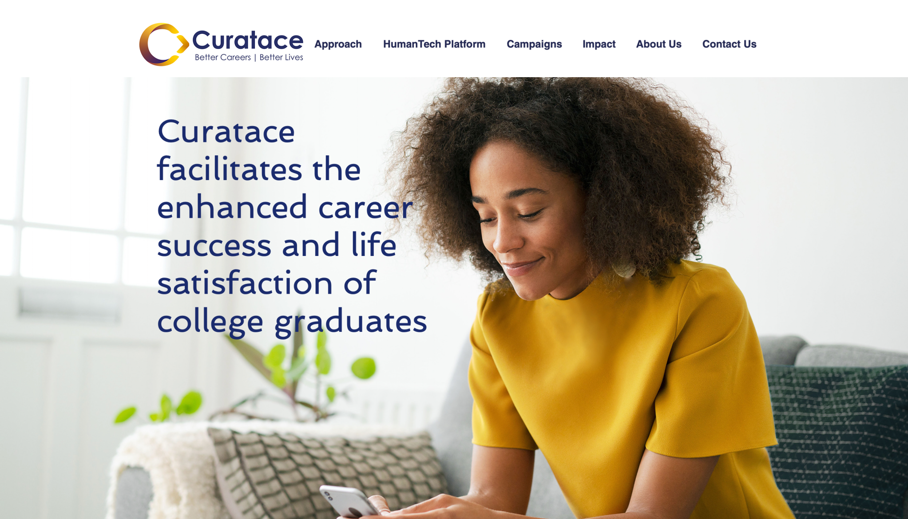
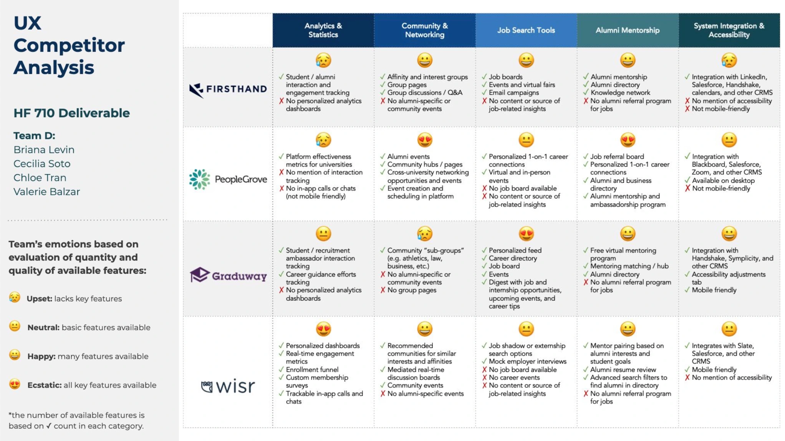
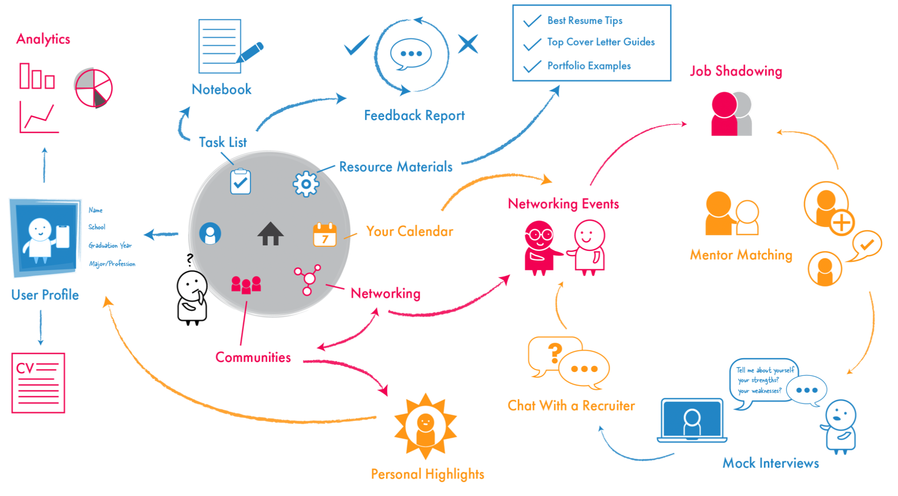
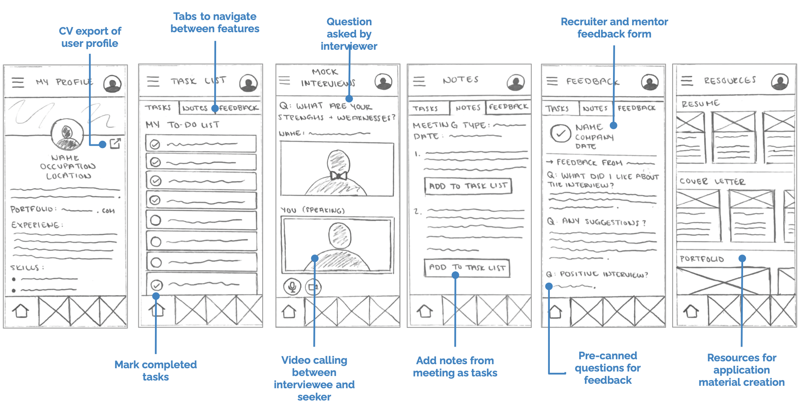

Curatace
Reading time: 4 minutes
Curatace is a startup who works with colleges and universities and helps them facilitate alumni career success through volunteer infrastructures. Volunteering alumni connect with current students and help them build their early and mid-stage careers.
Curatace’s landing page (design is not mine)
The team at Curatace were in the early stages of their business analysis, and they wanted our help to create a human-centric solution, or in their words “a ‘HumanTech’ platform.” To this end, we used a number of ideation techniques to better understand how would a solution with Curatace’s core values and mission would work in practice. This project was a part of my Bentley course HF710 – Managing a User-Centered Design Team.
This project was tackled through the double diamond approach. The first stages involved a series of research techniques, where we evaluated Curatace viability as a business, as well as the different aspects and nuances of its subject matter. Then, in the convergence stage, we converged and ideated a solution, shaping up what we believe Curatace should be.
Double Diamond Research - Divergence
First, we analyzed the landscape of the industry, comparing would-be competitors in a UX competitor analysis. As we evaluated Curatace’s primary competitors, we saw that each offering put a large focus on the Seeker and Giver relationship, particularly through mentoring.
We also saw that Curatace could invest in analytics, so colleges can have greater visibility into what their students and alumni require as they prepare to search for a job.
This competitor analysis helped us identify opportunity areas, particularly in features where competitors were doing poorly
After that, the next step was to find out more about what students, alumni, faculty and other potential stakeholders had experienced thorough their professional journey. The idea was to identify pain areas that Curatace might try to alleviate. For this, we conducted a series of exploratory interviews (short ones through the semester, and almost 30 in total!), which where then analyzed and coded using an Empathy Map.
![Empathy map for job seekers, highlighting four quadrants: What do they Think and Feel, Hear, See, and Say and Do. Insecurities and confusion post-graduation are noted. They seek advice from friends and professionals, and hear job landing insights like the importance of networking and internships. Seen elements include job postings on various platforms. Actions involve professional improvement and support through community and relationships. Pain points address job search frustrations, while gains include success in job search, networking, and career paths.](empathy-map.webp)
Our primary finding from the empathy map was that early graduates or unemployed professionals are tasked with juggling many activities, leaving them feeling stressed and lost when preparing to apply to jobs
The empathy map helped us find a focus on our proposed solution, as we decided to focus on early graduates and job seekers; a persona which we aptly named ‘Seekers’. In order to better understand what a Seeker might have to go through, and to better identify possible needs, wants and pains, we pieces together a customer journey map based on this Seeker persona, who we humanized as ‘Sam the Seeker’.
Double Diamond Ideation - Convergence
With the information from this first journey map, we tried to elaborate how Curatace might be viable as a business that could supply people like Sam with the job-seeking advice and reassurance he needs. To do this, we used a Business Model Canvas, outlining the inner workings of what we envisioned Curatace should do.
![Business Model Canvas for a career services platform. Key Partners include organizations, universities, and job seekers. Key Activities focus on mock interviews and feedback sessions. Value Proposition offers career building expertise. Customer Relationships emphasize networking and insights. Customer Segments target graduates and professionals. Channels include networking events and apps. Key Resources involve recruiters and marketing. Cost Structure covers employee and hosting costs. Revenue Streams highlight job fairs and premium access subscriptions.](business-model-canvas.webp)
The BMC. Here we had to sit down and think about how might Curatace work
When we first created Sam’s journey map, we focused on building out his experience with the goal of receiving a job offer. Based on sponsor feedback and additional rounds of interviews, we changed our journey ‘lens’ to focus solely on Sam’s experience as he prepares to apply to jobs.
We wanted to better understand how Curatace might fit into this persona journey, and so we did two versions of the Customer Journey Map, one before Curatace, and one when the Seeker has access to Curatace.
![Retrospective Journey Map of the experience without/before Curatace, detailing Sam's job-seeking process. Sam, a college senior, goes through these stages: Explore Industries, Set Expectations, Professional Networking, Prepare Materials, Receive Advice and Referrals, Reflect and Reassess, and Apply to Jobs. The map highlights Sam's actions, thoughts and emotions like curiosity and frustration, opportunities, and internal ownership. It outlines steps such as networking, preparing resumes, conducting mock interviews, and refining applications based on feedback.](journey-map-without.jpg)
Sam’s Journey Map without Curatace
![Prospective Journey Map, showcasing the journey of Sam, a college senior job seeker using Curatace. The map consists of six stages: Explore Industries, Set Expectations, Professional Networking, Prepare Materials, Receive Advice and Referrals, Reflect and Reassess, and Apply to Jobs. Each stage includes actions, thoughts and emotions, opportunities, and internal ownership. Sam's journey reflects various emotions, from curiosity to confidence. Key highlights include developing a resume, attending networking events, and seeking mentorship to enhance career prospects.](journey-map-with.jpg)
Sam’s Journey Map with Curatace
Feature Design
In order to create a prototype of what Curatace might look like, we did a brainstorm to identify possible, concise features which might fit into our expected customer journey with Curatece. These ideas were then curated through a Buy a Feature exercise, where every team member was given a budget and each feature a prize based on complexity.
After testing our feature ideas with participants, we were able to categorize them into 3 groups: The must-have features, which were ranked the highest and determined as critical to have in Curatace’s MVP. The should-have features, which were the runner ups to the must-have features. * The could-have features, which were deemed the lowest priority.
In this concept map, we highlighted how all features would interact, must-haves are colored blue, should-haves in yellow, and could-haves in pink
Here’s an example of how the must-have features would look like prototyped
At the end, all of our findings were presented to Curatace’s team, hopefully they take them into account when creating their MVP.
Tools Used
- Mural.co for building most of the deliverables
- Google Slides for the Customer Journey Maps
- Good old paper and pencil for some feature sketches
- Zoom to conduct remote interviews
Learnings
This project was a great way to do exercise and practice a lot of UX tools and best practices, with some sparks of Design Thinking and prototyping during the later stages. Overall it was a great way for me to familiarize myself with some of these techniques, and I will definitely be using those in the future, in fact I have used some in subsequent projects.